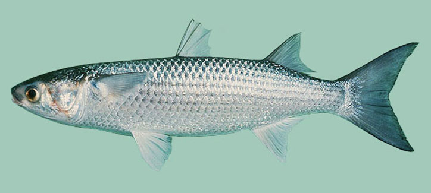

Mugil cephalus (Κέφαλος)

Ο κέφαλος (Mugil cephalus), ή κέφαλος/γκρι μουγκίλι, είναι κοσμοπολίτικο παράκτιο ψάρι που ζει από τροπικά έως εύκρατα νερά και έχει μεγάλη σημασία για αλιεία και ιχθυοκαλλιέργεια.
Μορφολογία
Έχει μακρόστενο, σχετικά κυλινδρικό σώμα με πλατιά κεφαλή, μικρό στόμα και δύο ραχιαία πτερύγια, με ασημί πλευρές και πιο σκούρα ράχη. Τα ενήλικα φτάνουν συνήθως 30–60 cm, αλλά μπορεί να ξεπεράσουν τα 80 cm, και σχηματίζουν μεγάλα κοπάδια κοντά στον βυθό.
Πού τον συναντάμε
Ο κέφαλος είναι τυπικό παράκτιο είδος που ζει σε θάλασσα, εκβολές, λιμνοθάλασσες και ποτάμια, σε βάθη 0–10 m πάνω από αμμώδη ή λασπώδη βυθό. Αντέχει μεγάλο εύρος αλατότητας (από σχεδόν γλυκό έως πολύ αλμυρό νερό) και θερμοκρασιών περίπου 8–24 °C, γι’ αυτό εμφανίζεται τόσο σε λιμνοθάλασσες όσο και σε ανοικτές ακτές.
Διατροφή
Ο κέφαλος είναι παμφάγο–βενθοφάγο ψάρι: τα νεαρά τρέφονται περισσότερο με ζωοπλαγκτόν, ενώ τα μεγαλύτερα άτομα φιλτράρουν άλγη, φυτικό υλικό, οργανικό «λάσπη» (detritus) και μικροασπόνδυλα από τον βυθό. Έτσι παίζει σημαντικό ρόλο στην ανακύκλωση οργανικής ύλης σε εκβολές και λιμνοθάλασσες.
Συνθήκες εκτροφής
Στην ιχθυοκαλλιέργεια, ο Mugil cephalus εκτρέφεται σε λιμνοθάλασσες, παράκτιους ιχθυοφραγμούς και συστήματα ανακυκλοφορίας, αξιοποιώντας την αντοχή του σε χαμηλή αλατότητα και μέτριες θερμοκρασίες. Τα καλύτερα αποτελέσματα επιτυγχάνονται με σταδιακή προσαρμογή των νεαρών σε γλυκά ή χαμηλής αλατότητας νερά, θερμοκρασίες περίπου 18–24 °C, καλή οξυγόνωση και τροφές που μιμούνται την παμφάγο δίαιτα (φυτική ύλη + ζωικές πηγές), ώστε να εξασφαλίζεται υψηλή επιβίωση και αποδοτική ανάπτυξη.